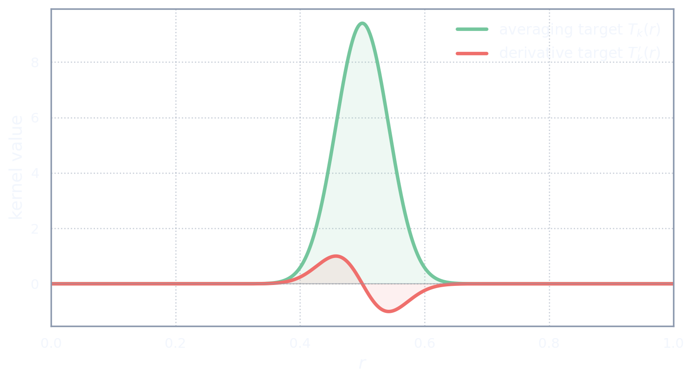
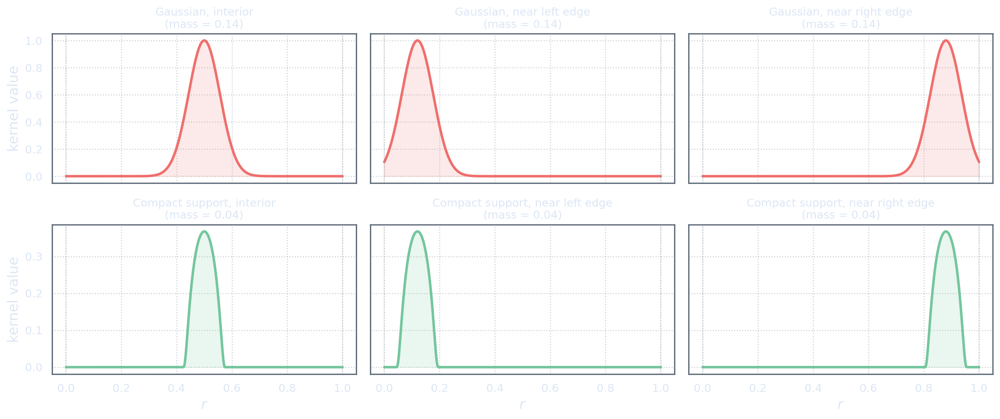

Not Every Target Is an Average
Derivative targets
So far, the target kernels have represented localized averages. In that setting, unit mass was essential. If \[\int_\Omega T_k(r)\dd r=1,\] then the component \[[\mathbf p]_k = [\Tau(m)]_k = \int_\Omega T_k(r)m(r)\dd r\] can be interpreted as a weighted average of \(m\).
But not every useful property is an average. (The original SOLA papers already advertised this freedom — “great versatility in the choice of target form” [PT94]; the systematic treatment of general linear properties that this act follows is developed in [MKZ25].)
Sometimes we may want to estimate something more like a local derivative. For example, we may want to know whether the model is increasing or decreasing near a location \(r_0\). A natural target kernel for this kind of question would not be a positive bump. It would have positive and negative lobes.
A cartoon derivative target might look like this: \[T_k(r) \approx \text{positive lobe to the right of }r_0 - \text{positive lobe to the left of }r_0.\] Such a kernel compares nearby regions of the model. It is not trying to average the model. It is trying to detect change.

For a derivative-like target, it is often natural to have \[\int_\Omega T_k(r)\dd r=0.\] This condition says that constants are ignored. Indeed, if \(m(r)=c\), then \[[\mathbf p]_k = \int_\Omega T_k(r)c\dd r = c\int_\Omega T_k(r)\dd r = 0.\] That is exactly what a derivative-like quantity should do. The derivative of a constant is zero.
Derivative targets via integration by parts
There is a natural way to obtain derivative targets from averaging targets. Suppose we start with an averaging target \(T_k\) and would like to estimate a local average of the model derivative \(m'(r)\) near \(r_0\). The natural property would be \[\int_\Omega T_k(r)\,m'(r)\,\dd r.\] If \(T_k\) is smooth and compactly supported inside \(\Omega\), we can integrate by parts to move the derivative onto the target: \[\int_\Omega T_k(r)\,m'(r)\,\dd r = -\int_\Omega T_k'(r)\,m(r)\,\dd r.\] The boundary terms vanish because \(T_k\) is zero near the boundary of \(\Omega\). The result is a new target kernel \(-T_k'\), which has positive and negative lobes, and the property can be written as \[[\mathbf p]_k = \int_\Omega \bigl(-T_k'(r)\bigr)\,m(r)\,\dd r.\] So a derivative target is just the derivative of an averaging target, with a sign change from integration by parts.
This works cleanly when \(T_k\) is a smooth compactly supported function — a bump function, or more generally a test function in the sense of distribution theory. The compact support guarantees that no boundary terms appear, regardless of where the target is placed.
A Gaussian is not compactly supported. On a bounded interval \([0,1]\), a Gaussian centred near the edge is clipped by the boundary. The clipped tail is simply lost, so the effective target kernel depends on where it is placed. Two Gaussian targets with the same width and normalization, one centred at \(r=0.5\) and one at \(r=0.12\), are different kernels with different total mass and different averaging properties. That means the interpretation of the corresponding property changes with position — an undesirable side effect.
A careful reader will already be smiling at this argument. If that is you, tap here.

Compact-support targets avoid this problem entirely. A bump function that fits inside \(\Omega\) is unaffected by the boundary, no matter where it is placed, as long as its support is fully inside the domain. The same kernel shape means the same question at every location. This is one reason why test functions — smooth, compactly supported functions — are the natural building blocks for target kernels in SOLA.
An averaging kernel listens for level. A derivative kernel listens for change. One should reproduce constants; the other should annihilate them.
This already shows why “unit mass” cannot be the universal constraint. For averages, unit mass is the correct calibration. For derivative-like targets, zero mass may be the correct calibration.
The target's meaning determines the constraint.
A true pointwise derivative, such as \(m'(r_0)\), is not defined for every model in a rough function space such as \(L^2(\Omega)\). To make such a target rigorous, one either works in a smoother model space or uses a regularized derivative target. In these notes, the phrase “derivative target” should be read as a smooth linear diagnostic designed to behave like a localized derivative.
In SOLA terms, the goal would be to choose \(\mathbf X\) so that the resolving kernel \[R_k(r) = \sum_{i=1}^{N_d}[\mathbf X]_{ki}K_i(r)\] resembles the derivative-like target \(T_k(r)\). But the relevant calibration would not be \(\int_\Omega R_k(r)\dd r=1.\) It might instead be \(\int_\Omega R_k(r)\dd r=0,\) or some other condition that ensures the resolving kernel has the correct derivative-like behavior.
The moment we leave averages, unimodularity becomes only one example of a broader idea: the resolving kernel must satisfy the calibration needed for its intended interpretation.
Basis coefficient targets
Another kind of target arises when we want to estimate coefficients of the model relative to a chosen family of functions.
Suppose we have functions \(\phi_1,\dots,\phi_{N_p}\in\M.\) If these functions are orthonormal, then the analysis coefficients of \(m\) are \[[\mathbf p]_k = [\Tau(m)]_k = (\phi_k,m)_{\M}, \qquad k=1,\dots,N_p.\] In this case, the target kernels are simply \(T_k=\phi_k.\)
This kind of target is not necessarily local. A basis function may be global, oscillatory, radial, angular, compactly supported, or adapted to a numerical discretization. The property vector \(\mathbf p=\Tau(m)\) then records how much of \(m\) is seen in each chosen direction.
An averaging target asks, “what is the model doing near here?” A coefficient target asks, “how much of this chosen pattern is present in the model?”
There is a small but important detail. If the family \(\{\phi_k\}_{k=1}^{N_p}\) is not orthonormal, then the coefficient of \(m\) in that basis is not usually \((\phi_k,m)_{\M}.\) Instead, one must use the appropriate dual family or the relevant mass matrix. For example, if \(\{\phi^k\}_{k=1}^{N_p}\) is the dual family, then the coefficient-like target may be \[[\mathbf p]_k = (\phi^k,m)_{\M}.\] Equivalently, in finite-dimensional coordinates, one must keep track of the Gram matrix.
This is not a technical nuisance. It is the same lesson we have already met several times: interpretation depends on geometry. A coefficient is not just a number. It is a number relative to a chosen representation.
For SOLA, the target map is still linear: \[\Tau:\M\to\Pspace, \qquad [\Tau(m)]_k = (T_k,m)_{\M}.\] The only thing that changes is the meaning of the target kernels \(T_k\). They are no longer localized averages. They are coefficient-extraction kernels, or more generally representation-dependent linear diagnostics.
The resolving kernels are again \[R_k(r) = \sum_{i=1}^{N_d}[\mathbf X]_{ki}K_i(r).\] The question is now whether \(R_k\) reproduces the coefficient-like target \(T_k\) well enough for the intended use.
For such targets, unit mass may have no special meaning. The right constraint might instead be orthogonality to some nuisance mode, correct response to a basis function, or exact reproduction of a low-dimensional subspace.
A constraint that is natural for averages can be meaningless for coefficient targets. The target decides the calibration, not the other way around.
Contrasts and ratios
Some applications do not stop at individual SOLA outputs. They combine them further. For example, one might estimate two model properties and then form a difference, contrast, or ratio.
This is common in geophysics. One may estimate two quantities, such as two wave-speed parameters, and then form a ratio-like diagnostic. The danger is that each SOLA output comes with its own resolving kernel.
Suppose we have two SOLA outputs, \[[\widetilde{\mathbf p}]_1 = \int_\Omega R_1(r)m_1(r)\dd r,\] and \[[\widetilde{\mathbf p}]_2 = \int_\Omega R_2(r)m_2(r)\dd r.\] If \(R_1\) and \(R_2\) are different, then these two numbers are not measuring the two models in exactly the same way. They may correspond to different spatial averages, different amounts of smoothing, or different mixtures of nearby structure.
A ratio such as \(\frac{[\widetilde{\mathbf p}]_1}{[\widetilde{\mathbf p}]_2}\) is therefore not automatically the ratio of the intended target properties. It is the ratio of two resolved quantities, each with its own resolving kernel.
For the intended ratio interpretation to be safe, one would like the relevant resolving kernels to match in the way required by the physical question. In an idealized case, one might want \(R_1=R_2\) or, more generally, one might want both resolving kernels to reproduce their targets in a jointly compatible way.
Two SOLA numbers may look comparable while being averages with different kernels. A ratio of such numbers is then a ratio of two different questions.
This is not a reason to avoid contrasts or ratios altogether. It is a reason to label them honestly. If the numerator and denominator have different resolving kernels, the ratio must be interpreted through those kernels.
A ratio is safe only when the numerator and denominator have been measured with compatible lenses. If the lenses differ, the ratio inherits the mismatch.
This is another sign that the word “unimodularity” is too narrow for the general SOLA story. For ratios, the relevant condition may not be unit mass. It may be matched resolution. For derivatives, it may be zero response to constants. For coefficient targets, it may be exact response to selected basis functions.
All of these are examples of the same broader idea: resolving constraints.
Resolving Constraints
From unimodularity to calibration
In the previous act, the constraint \(\mathbf X\mathbf v=\mathbf w\) had a specific meaning. It enforced unit mass of the resolving kernels. For averaging targets, this was exactly what we needed: \(\int_\Omega R_k(r)\dd r=1.\)
But now we have seen other kinds of targets. A derivative-like target might need zero response to constants. A coefficient target might need correct response to a chosen basis function. A ratio might require matched resolving behavior between two outputs.
So the same algebraic form can carry a broader meaning.
A resolving constraint is any condition imposed on the SOLA weights so that the resulting resolving kernels have the structural property needed for interpretation.
For averages: \(\text{resolving constraint} = \text{unit mass}.\) For derivative-like targets: \(\text{resolving constraint} = \text{zero response to constants, or correct derivative calibration}.\) For coefficient targets: \(\text{resolving constraint} = \text{correct response to selected basis directions}.\) For ratios: \(\text{resolving constraint} = \text{compatible resolution between numerator and denominator}.\)
Unimodularity is not the principle. It is one example of the principle. The principle is calibration of the resolving kernels.
This shift in language matters. If we keep saying “unimodularity”, we may accidentally think only about averages. But SOLA is broader than averages. It is a method for constructing linear property-like quantities from linear data, and each property brings its own interpretation.
General constraint form
We now keep the same algebraic shape, but interpret it more generally.
Let \(\mathbf v\in\D,\; \mathbf w\in\Pspace.\) The constrained SOLA problem has the form \[\mathbf X_c = \argmin_{\mathbf X} \left\| \Tau-\mathbf XG \right\|_{\HS}^2 \quad \text{subject to} \quad \mathbf X\mathbf v=\mathbf w.\]
For averages, we used \(\mathbf v=G(1_\Omega),\) and \([\mathbf w]_k=1.\) Then \(\mathbf X\mathbf v=\mathbf w\) forced each resolving kernel to have unit mass.
For derivative-like targets, one might still use \(\mathbf v=G(1_\Omega),\) but choose \([\mathbf w]_k=0\) for components that should annihilate constants. This gives \(\int_\Omega R_k(r)\dd r=0.\)
For other targets, \(\mathbf v\) may represent a different test model. Suppose \(q\in\M\) is a model pattern whose response should be calibrated. Define \(\mathbf v=G(q).\) Then the constraint \(\mathbf X\mathbf v=\mathbf w\) says \(\mathbf XG(q)=\mathbf w.\) Since \(\mathcal{A}=\mathbf XG\), this is \(\mathcal{A}(q)=\mathbf w.\) Thus the approximate property map \(\mathcal{A}\) is forced to act on \(q\) in the prescribed way.
If the desired property map is \(\Tau\), a natural choice is often \(\mathbf w=\Tau(q).\) Then the constraint becomes \(\mathcal{A}(q)=\Tau(q).\) In words: the SOLA approximation must reproduce the exact target property on the selected test model \(q\).
A resolving constraint gives the resolving kernels a calibration exam. The test model \(q\) is the exam question, and \(\mathbf w\) is the required answer.
This interpretation makes the average case look less mysterious. There, the test model was the constant function: \(q=1_\Omega.\) The required answer was \(\mathbf w=(1,\dots,1)^\top.\) So unimodularity was simply the demand that the SOLA averages pass the constant-model test.
Several constraints
Sometimes one calibration condition is not enough. We may want the resolving kernels to respond correctly to several test models \(q_1,\dots,q_L\in\M.\) Define the finite-dimensional data vectors \(\mathbf v_\ell=G(q_\ell)\in\D,\; \ell=1,\dots,L.\) Collect these into the finite matrix \[\mathbf V = \begin{pmatrix} \mathbf v_1 & \cdots & \mathbf v_L \end{pmatrix}.\] Likewise, choose the desired responses \(\mathbf w_\ell\in\Pspace,\; \ell=1,\dots,L,\) and collect them into \[\mathbf W = \begin{pmatrix} \mathbf w_1 & \cdots & \mathbf w_L \end{pmatrix}.\] Then the constraint becomes \(\mathbf X\mathbf V=\mathbf W.\)
A common choice is \(\mathbf w_\ell=\Tau(q_\ell),\) so that \(\mathbf XG(q_\ell)=\Tau(q_\ell),\; \ell=1,\dots,L.\) Equivalently, \(\mathcal{A}(q_\ell)=\Tau(q_\ell),\; \ell=1,\dots,L.\)
This says that the SOLA approximate property map \(\mathcal{A}=\mathbf XG\) must agree with the target property map \(\Tau\) on a selected finite-dimensional set of test models.
The general constrained formula
The multiple-constraint correction is the natural matrix version of the rank-one correction we used before. Let \(\mathbf H := GG^*\) be the data-space Gram matrix. The unconstrained minimizer is \[\mathbf X_0=\Tau G^*\mathbf H^{-1}.\]
Define \[\mathbf U:=\mathbf H^{-1}\mathbf V,\] and \[\boldsymbol\Gamma:=\mathbf V^*\mathbf U = \mathbf V^*\mathbf H^{-1}\mathbf V.\] Assuming \(\boldsymbol\Gamma\) is invertible, the constrained solution is \[\boxed{\mathbf X_c = \mathbf X_0 - (\mathbf X_0\mathbf V-\mathbf W)\boldsymbol\Gamma^{-1}\mathbf U^*.}\]
The logic is exactly the same as for one constraint. First, \(\mathbf X_0\) is what SOLA wants to do without constraints. Then \(\mathbf X_0\mathbf V-\mathbf W\) measures how badly that unconstrained solution fails the calibration tests. The correction subtracts just enough, in the \(\mathbf H^{-1}\)-geometry, to force the constraints to hold.
To verify, apply \(\mathbf X_c\) to \(\mathbf V\): \[\mathbf X_c\mathbf V = \mathbf X_0\mathbf V - (\mathbf X_0\mathbf V-\mathbf W)\boldsymbol\Gamma^{-1}\mathbf V^*\mathbf H^{-1}\mathbf V.\] Since \(\mathbf V^*\mathbf H^{-1}\mathbf V=\boldsymbol\Gamma,\) we obtain \[\mathbf X_c\mathbf V = \mathbf X_0\mathbf V - (\mathbf X_0\mathbf V-\mathbf W) = \mathbf W.\] So the constraint is satisfied exactly.
The one-constraint formula drops out as a special case. If \(\mathbf V=\mathbf v\) and \(\mathbf W=\mathbf w\), then \[\boldsymbol\Gamma = \mathbf v^*\mathbf H^{-1}\mathbf v = \beta,\] and the correction becomes \[\mathbf X_c = \mathbf X_0 - \frac{\mathbf X_0\mathbf v-\mathbf w}{\beta}\mathbf u^*,\] which is exactly the earlier formula.
The matrix \(\boldsymbol\Gamma=\mathbf V^*\mathbf H^{-1}\mathbf V\) is the Gram matrix of the constraint directions in the SOLA geometry. If it is invertible, the constraints are independent in the geometry induced by \(\mathbf H^{-1}\). If it is singular, some constraints are redundant or incompatible in that geometry, and one would use a pseudoinverse or remove redundant constraints.
One constraint gives a rank-one correction. \(L\) constraints give a rank-\(L\) correction. The constrained SOLA operator differs from the unconstrained one by a finite-rank map whose rank equals the number of independent calibration conditions.
A single constraint \(\mathbf X\mathbf v=\mathbf w\) calibrates one test direction. Multiple constraints \(\mathbf X\mathbf V=\mathbf W\) calibrate several test directions at once. The correction is always a finite-rank adjustment to the unconstrained solution.
There is, of course, a trade-off. Every extra constraint reduces the freedom available to match the target kernels and, later, to control noise. Constraints are useful only when they protect the interpretation of the reported quantity.
What the constraint should mean
A resolving constraint should not be chosen because it is algebraically convenient. It should be chosen because it protects the meaning of the SOLA output.
If the output is called an average, the resolving kernel should reproduce constants correctly. That leads to unit mass: \(\int_\Omega R_k(r)\dd r=1.\)
If the output is called a derivative-like quantity, the resolving kernel should ignore constants: \(\int_\Omega R_k(r)\dd r=0.\)
If the output is meant to represent a coefficient, the resolving kernel should be calibrated against the relevant basis or dual-basis functions.
If the output will be used in a ratio, the resolving kernels of the numerator and denominator should be checked together, not separately.
The practical rule is: \[\text{choose the constraint according to how the reported number will be interpreted.}\]
A constraint can make a SOLA estimate more interpretable, but only if the constraint matches the interpretation. The wrong constraint is just decorative algebra.
This broader view also makes SOLA more flexible. The method is not restricted to localized averages. It can be adapted to many linear diagnostics, provided we are honest about what the resolving kernels actually represent.
A resolving constraint says: preserve the feature of the resolving kernel that makes the reported number meaningful.
We now have the clean deterministic skeleton of SOLA: \[\text{choose target kernels}, \quad \text{build resolving kernels from data kernels}, \quad \text{enforce the constraints needed for interpretation}.\] The next ingredient is noise. Real data are not exact, and the weights used to sharpen a resolving kernel can also amplify observational error. That is where the resolution-noise trade-off enters.
References
- Frank P. Pijpers and Michael J. Thompson (1994). “The SOLA method for helioseismic inversion.” Astronomy & Astrophysics 281, 231–240. Target-form flexibility in the original SOLA setting. ADS · free scan (ADS)
- Adrian M. Mag, Christophe Zaroli, and Paula Koelemeijer (2025). “Bridging the gap between SOLA and deterministic linear inferences in the context of seismic tomography.” Geophysical Journal International 242(1), ggaf131. Open access. General linear properties and their resolving constraints, beyond averages. doi:10.1093/gji/ggaf131